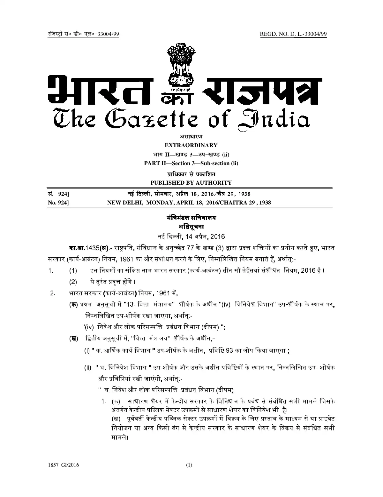
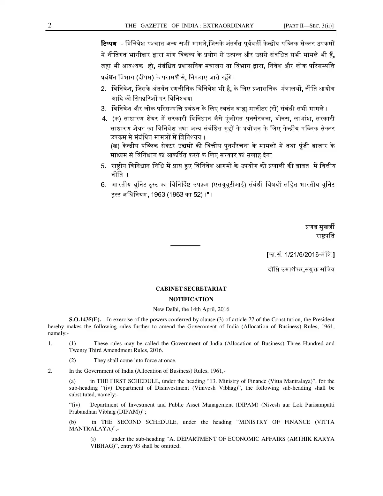
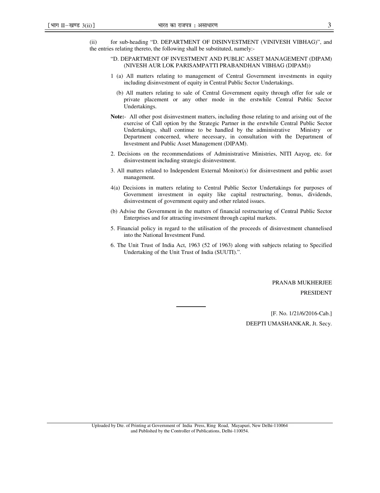

Amendment #323 (S.O. 1435(E), 2016)
3 changes: 1 to the First Schedule, 2 to the Second Schedule. 3 applied
The order, page by page
Page 1 of 3

Page 2 of 3

12Schedule 1 › Ministry of Finance › Department of Disinvestment
- iv. Department of Investment and Public Asset Management (DIPAM)
applied at schedule 1 › ministry 13 › department iv in the Rules after #323
Schedule 2 › MINISTRY OF FINANCE › DEPARTMENT OF ECONOMIC AFFAIRS › entry 93
applied at schedule 2 › ministry MINISTRY OF FINANCE › department A › group_heading IX › entry 93 in the Rules after #323
Page 3 of 3

3Schedule 2 › MINISTRY OF FINANCE › DEPARTMENT OF DISINVESTMENT
- D. DEPARTMENT OF INVESTMENT AND PUBLIC ASSET MANAGEMENT (DIPAM)
- 1.
- a. All matters relating to management of Central Government investments in equity including disinvestment of equity in Central Public Sector Undertakings.
- b. All matters relating to sale of Central Government equity through offer for sale or private placement or any other mode in the erstwhile Central Public Sector Undertakings.
- Note:- All other post disinvestment matters, including those relating to and arising out of the exercise of Call option by the Strategic Partner in the erstwhile Central Public Sector Undertakings, shall continue to be handled by the administrative Ministry or Department concerned, where…
- 2. Decisions on the recommendations of Administrative Ministries, NITI Aayog, etc. for disinvestment including strategic disinvestment.
and 6 more
- 3. All matters related to Independent External Monitor(s) for disinvestment and public asset management.
- 4.
- a. Decisions in matters relating to Central Public Sector Undertakings for purposes of Government investment in equity like capital restructuring, bonus, dividends disinvestment of government equity and other related issues.
- b. Advise the Government in the matters of financial restructuring of Central Public Sector Enterprises and for attracting investment through capital markets.
- 5. Financial policy in regard to the utilisation of the proceeds of disinvestment channelised into the National Investment Fund.
- 6. The Unit Trust of India Act, 1963 (52 of 1963) along with subjects relating to Specified Undertaking of the Unit Trust of India (SUUTI).
applied at schedule 2 › ministry MINISTRY OF FINANCE › department D in the Rules after #323
How this document was read
From the Government of India (Allocation of Business) Rules, 1961 and their amendments, as published by the Cabinet Secretariat (cabsec.gov.in), read by orgpedia. The readings of the older scanned gazettes have known gaps.